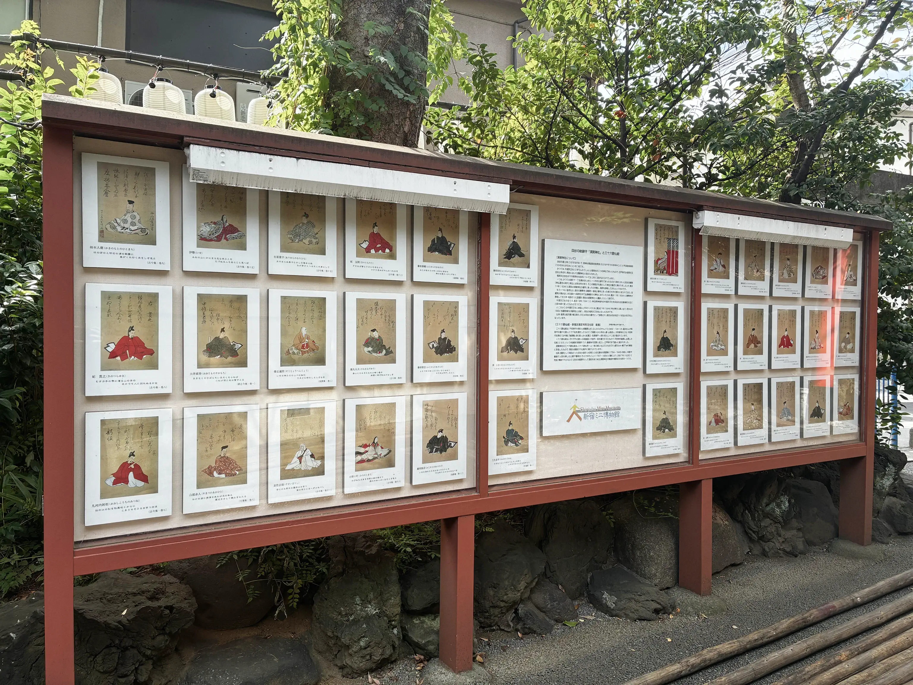
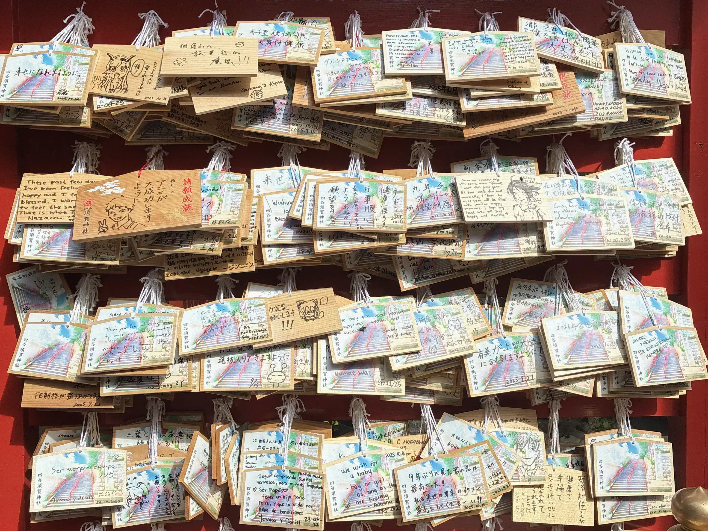
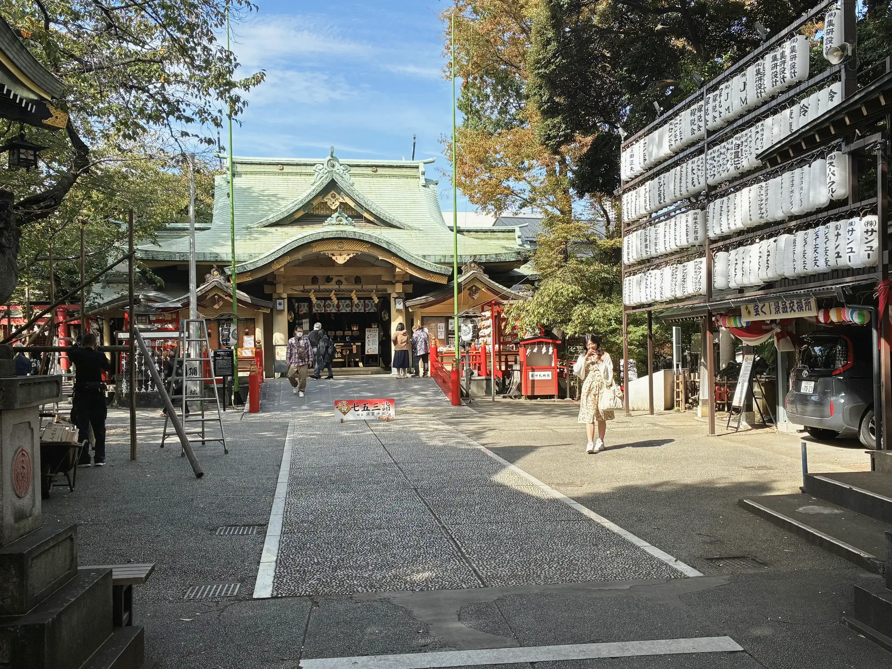
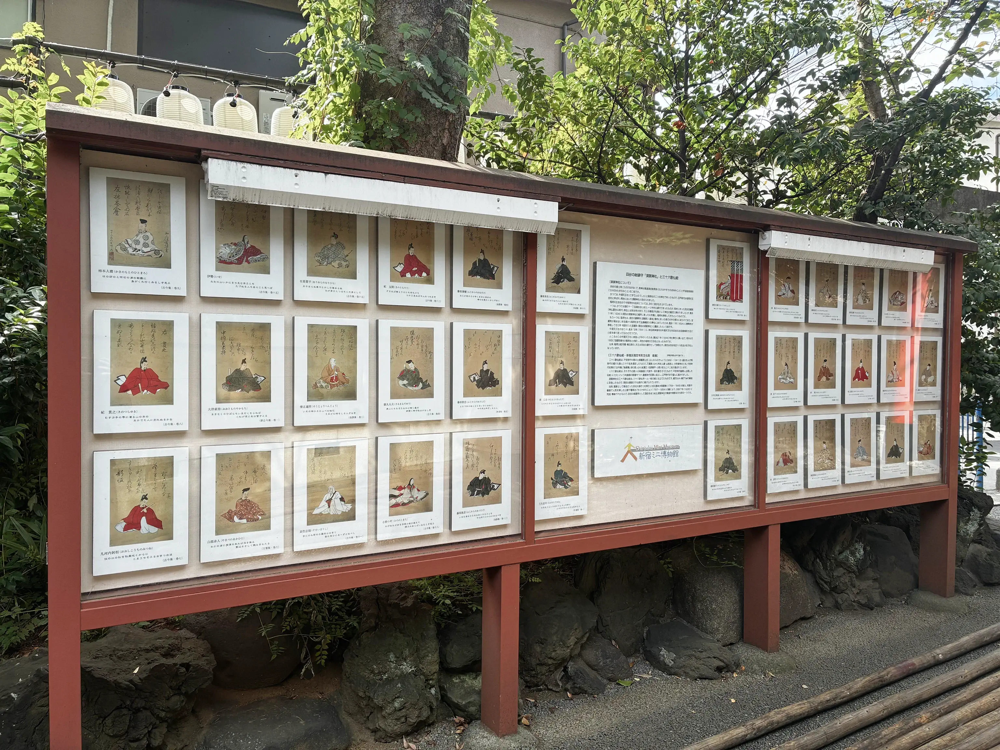
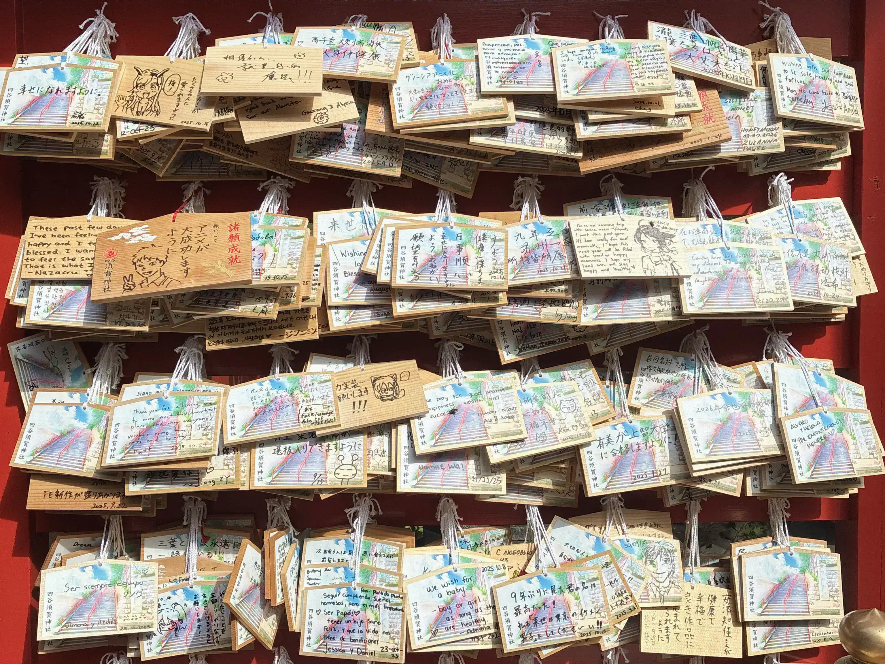
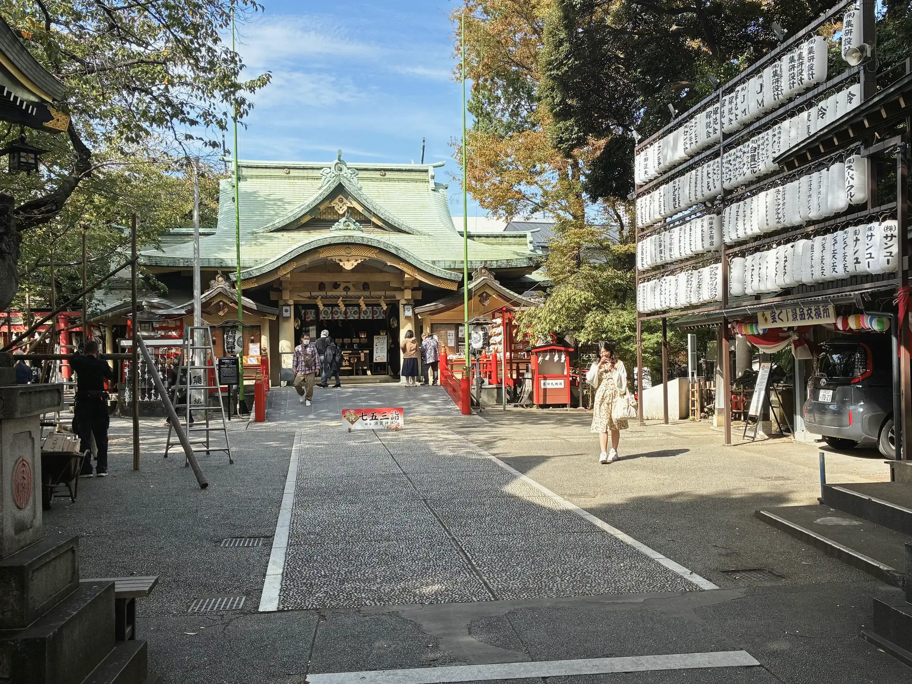

一年 後期授業 情報デザイン
古事記アプリ
2025年・秋・冬

東京都には多くの神社が存在し、観光資源であると同時に、地域文化や人々の生活と深く結びついた場でもあります。しかし近年では、神職の不足や常駐不在、人口減少や信仰の希薄化による収入減少、鎮守の森の維持管理の難しさなど、持続可能性の面で多くの課題を抱えています。また、観光客の増加によるオーバーツーリズムや、地域住民との摩擦も問題となっています。さらに、情報発信やコミュニケーションの分断、多言語対応や予約導線、キャッシュレス非対応といった観光サービス面の課題も存在します。こうした状況を踏まえ、参拝者のニーズと神社の機能を掛け合わせた新たな解決方法を探ることが、本課題の背景です。
課題の導入として、神田明神、須賀神社、湯島天神を訪れ、実地調査を行いました。現地の風景や参拝者の様子を観察することで、資料だけでは得られない多くの気づきを得ることができました。その結果、課題に対する理解をより深めることができました。
 





現地調査の中で、印象的な物語に出会いました。湯島天神で祀られている神様は、日本古代に実在した人物で、無実の罪により命を落としたと伝えられています。その強い想いを恐れ、人々は怨念を鎮めるために彼を祀るようになりました。こうした少し不思議で奥深い神社の物語は、日本各地にありますが、外国人観光客にはあまり知られていません。
そこで生まれたのが、「古事記」というアプリです。本アプリでは、東京都文京区を起点に、神社にまつわる物語を集めています。ストーリーモードでは物語を読むことができ、マップモードでは近くの神社や気になる場所を探すことができます。物語を読んだ後、実際にその場所を訪れ、体験として文化に触れることを目指しています。

アプリのデザインには、最新のAppleのiOS 26 UIキットを採用しています。配色は、神社の建築によく使われる朱色から着想を得て、彩度を少し抑えた色合いをデザインに取り入れました。全体的に落ち着きがあり、物語の世界観を邪魔しないトーンを意識しています。また、レイアウトは日本語と英語の両方が読みやすくなるよう、文字間や行間を調整し、長文でも心地よく読める設計にしました。